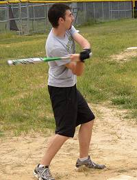
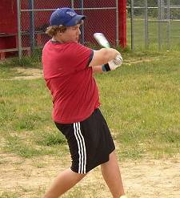
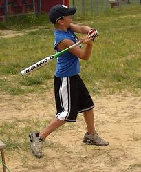
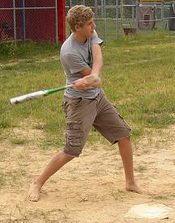
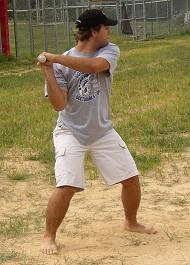
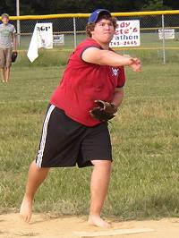
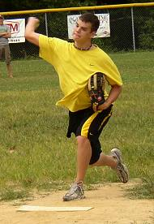
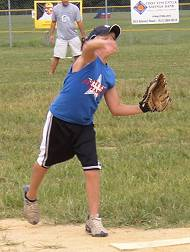
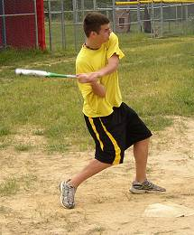

Aaron Zehr was 1-for-6
at the plate, and allowed just two solo homeruns in 4 2/3 innings of work
on the mound. |

Evan Woodard
was the hitting star of the day blasting a pair of solo homeruns in the
2-1 victory. |

Kyle Foley made his
chair baseball debut going 1-for-6 at the plate. |

Luke Yochum was 1-for-8 at
the plate and threw 2/3 innings allowing just one hit. |

Steven Alsobrooks played the
first game of his chair baseball career, but was hitless in six at bats.
Alsobrooks did have the defensive play of the day with a leaping grab in
the first inning. |

Evan Woodard picked up the
win in relief going 4 1/3 innings and allowing just one run on 3 hits. |

Tad Goldman pitched a pair
of scoreless innings to start the game striking out 5 of the 7 batters he
faced. |

Kyle Foley started on the
mound and pitched 1 1/3 innings, allowing no runs and one hit. |

Tad Goldman was 2-for-8 at
the plate with a double. |